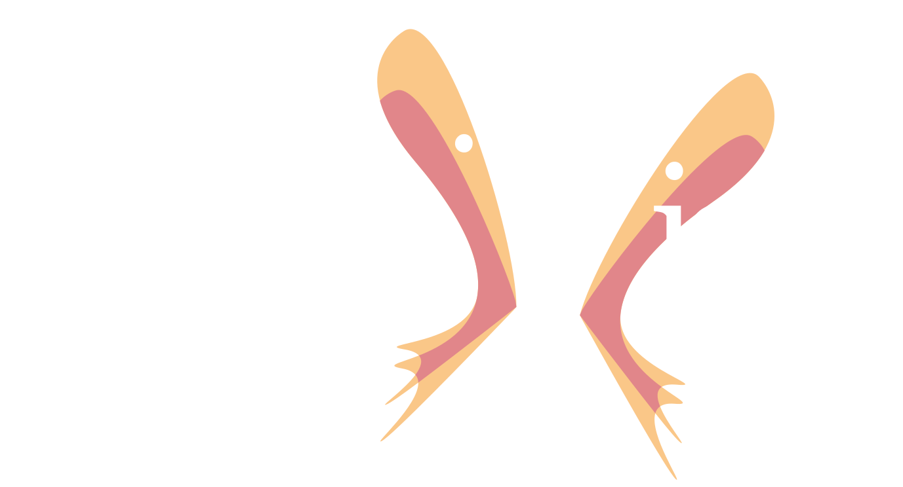
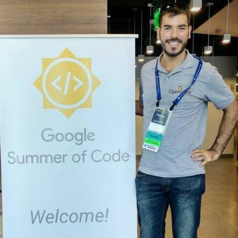

By Federico Capoano / @nemesisdesign

“Intelligence is the ability to avoid doing work, yet getting the work done.”
Linus Torvalds
25th of October 2014
Google Mentor Summit in California
Share the lower level solutions
to fix more important problems.
Which you can reuse instead of building
your own from scratch.
Thank your for your involvement in
Open Source networking!
OpenWRT/LEDE core developers, Prpl foundation, CZ.nic
OpenWISP Core Developer
Since 2012

«A look at the core of OpenWISP 2»
«Don't repeat yourself!»
«Automate the boring stuff!»
«For both management and traffic!»
«Outdoor and indoor mapping»
«Mesh networks are great»
«So what?»
1K users by the end of 2017
5 projects completed successfully
Bring the next generation
in the OpenWRT community
Interested in OpenWISP?
Come and talk to me!
Web: OpenWISP.org
Twitter: @openwisp
Support: Support Channels